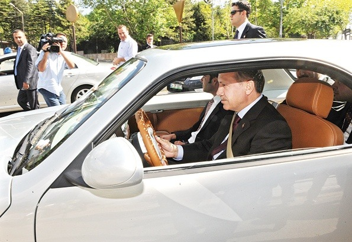
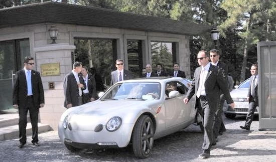
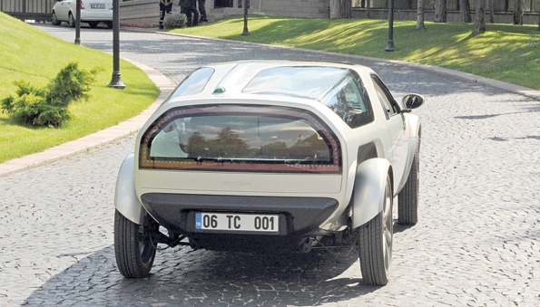
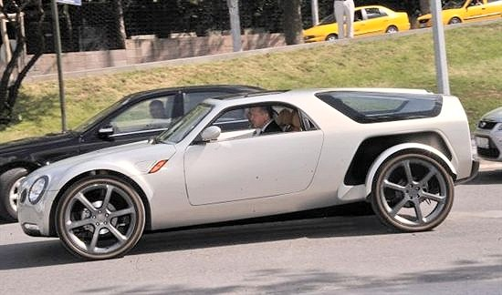
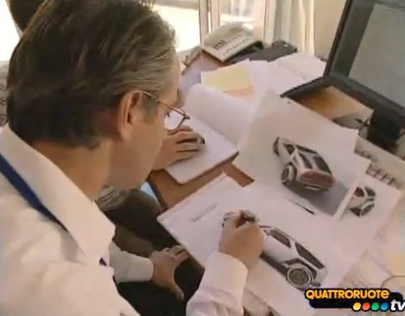
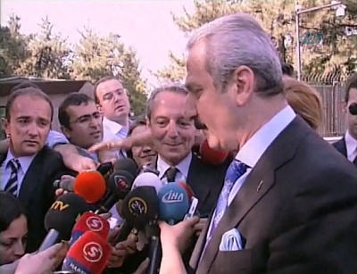
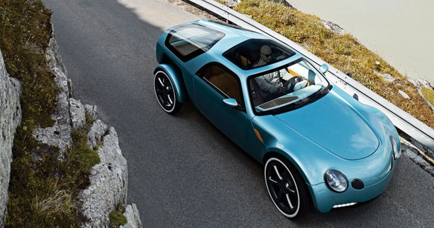
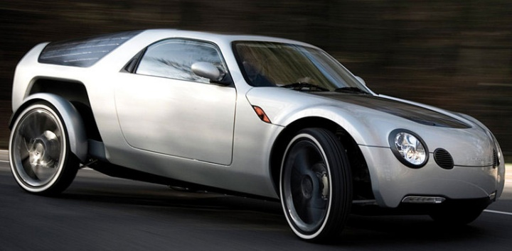
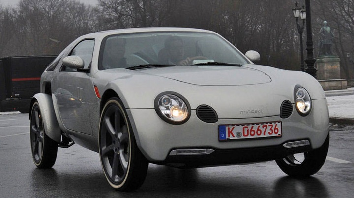

|
Murat Günak ve Ýsviçreli ortaðý Lorenzo Schmid ile görüþen Baþbakan Erdoðan, Mindset'i 23 Haziran'da kullandý. Bu araç ile Baþbakan'lýk konutu etrafýnda tur atan Erdoðan, yüksek teknoloji ile üretilen otomobili çok beðendiðini ve motorun çok sessiz çalýþtýðýný belirterek projeye destek sözü verdi. Görüþme sonunda Mindset'in üretiminin Türkiye'de gerçekleþtirilmesi için bir yatýrýmcý bulunmasýna karar verildi.




Baþbakan Erdoðan, hibrit motorlu aracýn test sürüþünü yaptý
Erdogan Test-Runs a Electric-Gas Hybrid Car
Otomobilcilere verdiði destekle "Otomobil Bakaný" unvanýný kazanan Devlet Bakaný Zafer Çaðlayan, aracýn yüzde 100 elektrikle çalýþtýðýný belirtti. Aracý son derece pratik ve sessiz bir araç olduðuna dikkat çeken Çaðlayan, tümüyle çevre dostu olduðunu, yakýt kullanmadýðýný anlattý. Türkiye açýsýndan çok önemli bir yatýrým ve marka olacaðýný ifade eden Çaðlayan, bu aracýn Türk imajýný dünyaya duyuracaðýný vurguladý.
Murat Günak ise, aracýn sýfýr gaz emisyonlu, sessiz bir araç olduðunu söyledi. Ýlk prototipi buraya getirdiklerini ve çok gurur duyduklarýný kaydeden Günak, Baþbakan Erdoðan'ýn aracý kullanmasýndan duyduðu memnuniyeti de dile getirerek, "Beyefendi'ye gösterdik. Bu bizim için çok büyük bir gurur. Mutlulukla geri dönüyoruz" diye konuþtu. Günak, kendisinin Ford, Mercedes ve Volkswagen otomobillerinin de tasarýmlarýný yaptýðýný belirterek, ancak Mindset'i sadece Türkiye için tasarladýðýný söyledi. Çaðlayan da aracýn Türkiye'de Anadolu KOBÝ'leri tarafýndan üretileceðini de söyledi.
Devlet Bakaný Zafer Çaðlayan, Murat Günak ile birlikte Mindset hakkýnda bilgi verdi.
Pille 100 km gidiyor
2007 yýlýnda kendi kurduðu þirket ile elektrikli araçlar üretmek için yoðun bir þekilde çalýþan Murat Günak, Ýsviçreli Spirt Avert ile 250 milyon euro yatýrýmla Mindset'i geliþtirdi. Günak, yýlda 10 bin adet araç üretmeyi planlýyor. Ýçten yanmalý bir motor yardýmýyla elektrik enerjisi elde eden Mindset, bünyesinde bulundurduðu lityum iyon pil sayesinde 100 km'yi elektrik enerjisiyle katederken, 100 km'lik menzil aþýldýðýnda 24 beygir güç üreten 2 silindirli, benzinli jeneratör devreye giriyor ve 800 km yol alabiliyor. Son derece kullanýcý dostu olan aracýn pillerini þarj etmek için fiþini normal bir elektrik prizine takmak yeterli olacak.

Murat Günak, Mindset tasarýmý üzerinde çalýþýrken...
(Videoyu izlemek için týklayýnýz)
Birçok modele imza attý
1952 yýlýnda Ýstanbul'da doðan Murat Günak 6 yaþýnda iken Almanya'ya taþýnýr. 2 yýl kadar Almanya'da kaldýktan sonra Ýstanbul'a tekrar dönerek ortaöðretimini burada tamamlar. Daha sonra yurt dýþýna tekrar çýkarak öðrenimini bir sanat okulunun endüstriyel dizayn bölümünde sürdürür. Gözü kara bir Türk delikanlýsý olan Günak, kendisini geliþtirip mesleðinin en uç noktasýna kadar gelerek dünya devi olan Ford, Mercedes, Peugeot, Chrysler, Volkswagen gibi firmalarda çalýþmalar yaparak birçok modele imzasýný attý. Daha sonra 2007 yýlýnda kendi þirketini
kurdu.
Çaðlayan, makam aracýnda yanýnda oturan arabanýn tasarýmcýsý Murat Günak'ý da tanýttý. Günak'ýn, Volkswagen ve Mercedes firmalarýnda tasarýmcý olarak çalýþtýðýný anlatan Çaðlayan, ''Murat Günak kardeþimiz Passat'ýn, Mercedes C serisinin hem marka yaratýcýsý, hem tasarýmcýsýdýr. Kendisinin yüzde 100 elektrikle çalýþan, yapmýþ olduðu bir prototipi sayýn Baþbakanýmýza görmesi için getirdiler. Sizlerin de gördüðünüz gibi Baþbakan arabayý kullandý'' diye konuþtu.
Aracýn, dünyada bu özelliklere sahip ilk otomobil olduðunu kaydeden Çaðlayan, otomobille ilgili daha önemli geliþmeler kaydedilmesini beklediklerini belirtti. Çaðlayan þöyle devam etti:
''Öylesine güzel bir yatýrým, böylesine özel ve güzel bir dizayn... Ýnþallah gelecekte dünyanýn en önemli markalarýndan biri olacak. Ýlk tasarýmý, ilk markasý olacak, Türk malý, Türk damgasýný alacak. Türkiye'de üretilecek. Türk sanayicisi Anadolu'daki KOBÝ'leriyle beraber üretecek. Son derece önemli. Sayýn Baþbakanýmýz arabayý kullandýlar. Kendilerine araçla ilgili gerekli bilgileri verdik.''
Çaðlayan, kendisinin de test ettiði aracýn kullanýmýnýn son derece pratik ve güzel olduðunu söyledi.
Aracýn çevre dostu olduðunu, çevreye hiçbir olumsuz etkisinin bulunmadýðýný anlatan Çaðlayan, katý yakýt kullanýlmayan otomobilin güneþ panelleri kanalýyla bataryasýnýn þarj edilebildiðini söyledi.
Tasarým üzerinde 2 yýldýr çalýþýldýðýný kaydeden Günak, bu aracý Türkiye için yaptýðýný söyledi.
Bir gazetecinin ''Sayýn Baþbakan nasýl karþýladý, ne deðerlendirme yaptý?'' sorusuna Günak, ''Çok mutlu oldu. Baksanýza araçla dýþarýya çýktý'' yanýtýný verdi.
Bir baþka gazetecinin, ''Aracýn seri üretiminin yapýlýp yapýlamayacaðý'' sorusuna da Günak, Çaðlayan'ý iþaret ederek, ''Beyefendi'ye sormak lazým'' dedi.
Bu kadarýný beklemiyorduk
Murat Günak'ýn ortak olduðu Spirt Avert þirketinin Türkiye Temsilcisi Kaan Kurþun, "Günak, Baþbakan Erdoðan'ýn gösterdiði destekten çok etkilendi" diye konuþtu. Günak'ýn Baþbakan'a kendisini ve yaptýðý çalýþmalarý anlattýðýný belirten Kurþun, þunlarý söyledi: "Toplantýda oldukça duygusal bir atmosfer oluþtu. Baþbakan, Murat Günak'ýn baþarýlarýndan çok etkilendi. Günak, büyük bir gururla toplantýdan ayrýldý. Bu kadar yakýn ilgiye beklemiyorduk" dedi.
Mindset'in 2008'in sonlarýndan beri Avrupa'nýn çeþitli kentlerinde deneme sürüþü yaptýðýný vurgulayan Kurþun, aracý Türkiye'de üretmekten gurur duyacaklarýný, "Türkiye Yatýrým Ajansý yatýrýmcý arýyor. Özellikle Baþbakan'ýmýzýn aracý kullanmasý büyük ilgi topladý, henüz teklif almadýk, hükümetten de haber bekleyeceðiz" dedi.
Mindset, üretimi yetiþirse, 2010 Kültür Baþkenti konuklarý için kullanýlacak
Aracýn Türkiye'de üretilmesi amacýyla giriþimler sürerken, tanýtýmýna büyük katký saðlayacak projeler de düþünülüyor. Bu kapsamdaki projelerden biri de "Ýstanbul 2010 Avrupa Kültür Baþkenti" etkinliklerine katýlacak yabancý konuklarýn kent içinde Günak'ýn araçlarýyla gezdirilmesi.
Yatýrým desteði bulunarak üretime geçilmesi halinde, prototip olarak kabul edilen ön üretimden çýkan 20-25 adetlik Mindset filosu, yabancý konuklarýn taþýnmasýnda kullanýlacak.
Þu an dünyada sadece iki adet prototipi bulunan ve bunun sadece biri tam olarak yürüyebilen Mindset adlý hibrit aracýn, 2010 Avrupa Kültür Baþkenti projesine yetiþebilmesi için yatýrým desteðinin bir an önce sonuca baðlanmasý gerekiyor.
Bunun için tüm çalýþmalarý hýzlandýrdýklarýný belirten TAYSAD Baþkaný Ömer Burhanoðlu, aracýn Türkiye'de üretilmesi konusunda özellikle yan sanayi boyutuyla tüm desteði verebileceklerini kaydetti.
Burhanoðlu, Mindset projesine önayak olduklarýný ama yatýrýmcý olamayacaklarýný söyledi. Burhanoðlu, "Markamýzý yaratalým; milli bir otomobilimiz olsun diye bu yola girdik. 1 yýldýr çalýþýyoruz. Murat Günak'ýn projesini gerçekleþtirmek için yatýrýmcý arayýþýmýz sürüyor. Türkiye Yatýrým Ajansý da yardýmcý olacak" dedi.
- 4.20 metre boyunda prototip sýfýr emisyonla çalýþýyor. Çevreyi hiç kirletmiyor. Karbon emisyonu yok.
- Araca hareket gücünü lityum iyon teknolojili batarya saðlýyor.
- Araç bir bataryayla 100 km gidebiliyor.
- 100 km'den daha uzun mesafe gidilecekse, aküyü 24 beygir gücünde 2 silindirli benzinli jeneratör þarj ediyor.
- 7 saniyede 100 km hýza çýkabiliyor.
- Araçta lityum iyon batarya kullanýlýyor
- Tavan ve ön kaputunda güneþ panelleri var. Paneller akülere ek güç saðlýyor.
- Ar-Ge'si bir buçuk yýl gizlilik içinde yapýldý.
- Tasarýmcý Murat Günak, Mindest projesinde ortaðý Lorenzo Schmid'le çalýþtý.
- Türkiye'ye getirilen araç iki kapýlýydý. Ancak 4-5 kapýlý üretilebilecek.
- Türkiye'ye gelmeden önce soðuk, sýcak birçok iklimde test edildi. Asya'da, Avrupa'da, Afrika'da... Binlerce kilometre yol yapýldý. 6 aydýr testteydi.
- Türkiye'ye de kapalý kargoyla taþýnarak, gizli getirildi
- Sektörden edinilen bilgilere göre bu arabanýn seri üretimde alt modeli için fiyatýn 10 bin euro altý olarak düþünülüyor.
- Konforuna göre bu fiyat deðiþebilir ama standart araç 10 bin euro altý olacak



|